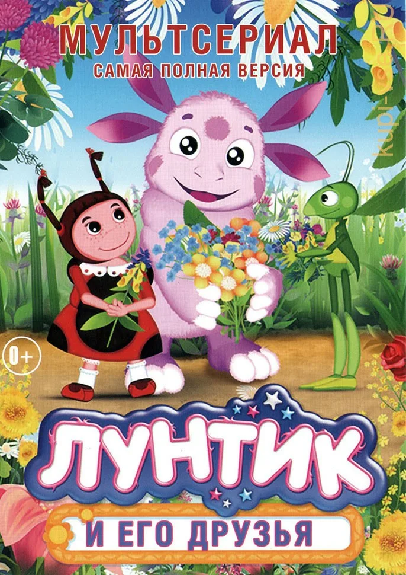

Добрый детский мультсериал про необычное существо, свалившееся на Землю прямо с Луны. Да, это существо родилось на Луне и каким-то волшебным образом очутилось на Земле, поэтому его и прозвали Лунтиком. Лунтик – ребёнок, он пока не знает, что такое хорошо и что такое плохо, но вместе с друзьями и приёмными родителями научиться всем земным премудростям и добру. Лунтик развивается вместе с друзьями – кузнечиком Кузей, божьей коровкой Милой и маленьким Пчелёнком. Им помогают дедушка Шер и бабушка Капа.